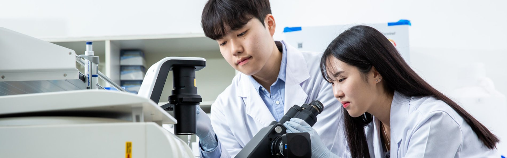

In Review
Decellularized skin-derived extracellular matrix enhances epidermal and hair follicle development in human skin organoids
Under Revision
Our work spans extracellular vesicles, organoids, stem cell therapeutics, and computational biology.

In Review
Decellularized skin-derived extracellular matrix enhances epidermal and hair follicle development in human skin organoids
Under Revision
In Review
Template-guided blood vessel assembloids engineered with a perfusable microfluidic system for therapeutic revascularization
Under Revision
In Review
A fully degradable microporous membrane drives in situ stem cell condensation and de novo bone regeneration in vivo
Under Revision
In Review
Orthogonal Control of Culture Dimensionality and Isolation Stress in a Dual-Microfluidic Platform Enhances Extracellular Vesicle Biomarker Detection
Under Revision
In Review
Decoupling Antirestenotic Efficacy from Impaired Vascular Healing with Regenerative Nanovesicle-Eluting Bioresorbable Scaffolds
Under Revision
In Review
Three synergistic pillars orchestrate regenerative macrophage reprogramming in human atherosclerotic organoids
Under Revision
In Review
Multiomics Profiling of Small Extracellular Vesicle Biomarkers in Cancer: From Mechanistic Insight to Clinical Validation
Submitted
In Review
A Single-Cell Aging Phenotypic Index from Nanosensor Chemical Cytometry Links Cellular Aging to Therapeutic Potency
Under Revision
In Review
Estimated Ligand Effects Enable Prediction of Unseen Future Traits Across Heart Development
Under Revision
In Review
Mechanical unloading via acoustic force counterbalancing shares transcriptomic and functional features with spaceflight responses in Caenorhabditis elegans
Under Revision
Nat. Commun.
A Cross-scale Causal Mapping Framework Pinpoints Macrophage Orchestrators of Balanced Arterial Development
Nature Communications 2026, Accepted
Adv. Sci.
Targeting Cannabinoid 1 Receptor in Macrophages Alleviates Psoriatic Skin Inflammation through the AUF1–NLRP3 Axis
Advanced Science 2026, Accepted
https://doi.org/10.1002/advs.78313
KSBB J.
Milk-derived Extracellular Vesicles as Natural Nanocarriers for Drug and Gene Delivery
KSBB Journal 2026, Accepted
https://doi.org/10.7841/ksbbj.2026.41.2.112
npj Flex. Elec.
Inertia-driven, self-powered electrotherapy for enhanced wound regeneration
npj Flexible Electronics 2026, 10(84)
https://doi.org/10.1038/s41528-026-00583-z
Adv. Mater. Technol.
Preservation of Extracellular Vesicle Integrity and Cargo Using Spiral Microfluidic Chip-based Separation
Advanced Materials Technologies 2026, e02310
https://doi.org/10.1002/admt.202502310
Int. J. Biol. Macromol.
Blockade of TLR2 activation in macrophages by self-assembled hyaluronic acid nanoparticles alleviates psoriasis-like skin dermatitis
International Journal of Biological Macromolecules 2025, 323(2):147202
https://doi.org/10.1016/j.ijbiomac.2025.147202
Front. Cardiovasc. Med.
Composition of cardiac-derived extracellular vesicles changes with vesicle origin and determines uptake
Frontiers in Cardiovascular Medicine 2025, 12:1565104
https://doi.org/10.3389/fcvm.2025.1565104
Nat. Comm.
Unveiling aging heterogeneities in human dermal fibroblasts via nanosensor chemical cytometry
Nature Communications 2025, 16:6276
https://doi.org/10.1038/s41467-025-61590-8
Bioact. Mater.
Subaqueous acoustic pressure system based one day heterotypic pseudo-islet spheroid formation with adipose-derived stem cells for graft survival-related function enhancement
Bioactive Materials 2025, 51:276-292
https://doi.org/10.1016/j.bioactmat.2025.05.005
Tissue Eng. Regen. Med.
Feasibility assessment of 3D printing-based tubular tissue flap in a porcine model for long segmental tracheal reconstruction
Tissue Engineering and Regenerative Medicine 2025, 22:469-479
https://doi.org/10.1007/s13770-025-00718-9
Adv. Sci.
Reinforcing stem cell spheroid through OPBM preconditioning for advanced vascularization
Advanced Science 2025, 2500788
https://doi.org/10.1002/advs.202500788
Tissue Eng. Regen. Med.
Innovations in vascular repair from mechanical intervention to regenerative therapies
Tissue Engineering and Regenerative Medicine 2025, 22:551-567
https://doi.org/10.1007/s13770-024-00700-x
Biomater. Sci.
Optimized Synthesis of Biphasic Calcium Phosphate: Enhancing Bone Regeneration with Tailored β-tricalcium Phosphate/Hydroxyapatite Ratio
Biomaterials Science 2025, 13:969-979
https://doi.org/10.1039/d4bm01179a
npj CV Health
Transcriptomic analysis of circulating extracellular vesicles during the perioperative period of Fontan and Glenn surgery
npj Cardiovascular Health 2024, 36
https://doi.org/10.1038/s44325-024-00039-1
Biomater. Res.
High-throughput screening of 3D co-culture hair follicle mimetic tissue with enhanced extracellular matrix for the screening of hair growth-promoting compounds
Biomaterials Research 2024, 28:0125
https://doi.org/10.34133/bmr.0125
Adv. Biol.
The Effect of Parent Cell Type on Small Extracellular Vesicle-Derived Vehicle Functionality
Advanced Biology 2024, 8(3):2300462
https://doi.org/10.1002/adbi.202300462
iScience
Statistical modeling of extracellular vesicle cargo to predict clinical trial outcomes for hypoplastic left heart syndrome
iScience 2023, 26(10):107980
https://doi.org/10.1016/j.isci.2023.107980
Biomater. Res.
A novel and cost-effective method for high-throughput 3D culturing and rhythmic assessment of hiPSC-derived cardiomyocytes using retroreflective Janus microparticles
Biomaterials Research 2023, 27:79
https://doi.org/10.1186/s40824-023-00416-4
ACS Nano
Customized loading of microRNA-126 to small extracellular vesicle-derived vehicles improves cardiac function after myocardial infarction
ACS Nano 2023, 17(20):19613-19624
https://doi.org/10.1021/acsnano.3c01534
Adv. Funct. Mater.
3D Printing of Poly-ε-caprolactone (PCL) Auxetic Implant with Advanced Performance for Large Volume Soft Tissue Engineering
Advanced Functional Materials 2023, 33(24):2215220
https://doi.org/10.1002/adfm.202215220
Korean J. Chem. Eng.
A microfluidic platform for simulating stem cell migration using in vivo-like gradients of stem cell mobilizer
Korean Journal of Chemical Engineering 2023, 40(4):903-909
https://doi.org/10.1007/s11814-023-1390-6
Sci. Adv.
Knockdown of deleterious miRNA in progenitor cell-derived small extracellular vesicles enhances tissue repair in myocardial infarction
Science Advances 2023, 9(9):eabo4616
https://doi.org/10.1126/sciadv.abo4616
Extracell. Vesicle
Computational analysis of serum-derived extracellular vesicle miRNAs in juvenile sheep model of single stage Fontan procedure
Extracellular Vesicle 2022, 1:100013
https://doi.org/10.1016/j.vesic.2022.100013
Genomics
Comparative computational RNA analysis of cardiac-derived progenitor cells and their extracellular vesicles
Genomics 2022, 114(3):110349
https://doi.org/10.1016/j.ygeno.2022.110349
Biomaterials
Using computational methods to design patient-specific electrospun cardiac patches for pediatric heart failure
Biomaterials 2022, 283:121421
https://doi.org/10.1016/j.biomaterials.2022.121421
Biomater. Sci.
In vivo evaluation of bioprinted cardiac patches composed of cardiac-specific extracellular matrix and progenitor cells in a model of pediatric heart failure
Biomaterials Science 2021, 10:444-456
https://doi.org/10.1039/d1bm01539g
JCDD
3D printed auxetic patch for enhanced electric signaling between human pluripotent stem cell-derived cardiomyocytes
Journal of Cardiovascular Development and Disease 2021, 8(12):172
https://doi.org/10.3390/jcdd8120172
JCDD
Engineering cardiac small extracellular-derived vehicles with thin-film hydration for customized microRNA loading
Journal of Cardiovascular Development and Disease 2021, 8(11):135
https://doi.org/10.3390/jcdd8110135
Stem Cells
Bidirectional relationship between cardiac cellular matrix and cardiac cells in ischemic heart disease
Stem Cells 2021, 39(12):1650-1659
https://doi.org/10.1002/stem.3445
Nanomedicine
Biomimetic Nanovesicle Design for Cardiac Tissue Repair
Nanomedicine 2020, 15(19)
https://doi.org/10.2217/nnm-2020-0097
Small
Anti-atherogenic effect of stem cell nanovesicles targeting disturbed flow sites
Small 2020, 16(16):2000012
https://doi.org/10.1002/smll.202000012
Adv. Mater.
A surface-tailoring method for rapid non-thermosensitive cell-sheet engineering via functional polymer coatings
Advanced Materials 2020, 32(16):1907225
https://doi.org/10.1002/adma.201907225
Nat. Comm.
Microengineered human blood-brain barrier platform for understanding nanoparticle transport mechanism
Nature Communications 2020, 11:175
https://doi.org/10.1038/s41467-019-13896-7
J. Ind. Eng. Chem.
PEGylated substance P augments therapeutic angiogenesis in diabetic critical limb ischemia
Journal of Industrial and Engineering Chemistry 2019, 78(25):396-409
https://doi.org/10.1016/j.jiec.2019.05.030
Nat. Comm.
High-resolution acoustophoretic 3D cell patterning to construct functional collateral cylindroids for ischemia therapy
Nature Communications 2018, 9:5402
https://doi.org/10.1038/s41467-018-07823-5
Nano Res.
High-density lipoprotein-mimetic nanotherapeutics for cardiovascular and neurovascular disease
Nano Research 2018, 1-14
https://doi.org/10.1007/s12274-018-2101-1
Biomaterials
High-density lipoprotein-mimicking nanodiscs carrying peptide for enhanced therapeutic angiogenesis in diabetic hindlimb ischemia
Biomaterials 2018, 161:69-80
https://doi.org/10.1016/j.biomaterials.2018.01.027
Biotechnol. J.
In situ bone tissue engineering with an endogenous stem cell mobilizer and osteoinductive nanofibrous polymeric scaffold
Biotechnology Journal 2017, 12(12):1700062
https://doi.org/10.1002/biot.201700062
Macromol. Biosci.
Enhanced self-renewal and accelerated differentiation of human fetal neural stem cells using graphene oxide nanoparticles
Macromolecular Bioscience 2017, 17(8):1600540
https://doi.org/10.1002/mabi.201600540
Small
Mussel adhesion-inspired reverse transfection platform presenting small interfering RNA-lipidoid nanoparticles to enhance osteogenic differentiation and bone formation of human adipose-derived stem cells
Small 2016, 12(45):6266-6278
https://doi.org/10.1002/smll.201601868
Adv. Healthc. Mater.
Galactosylated lipidoid nanoparticles for delivery of small interfering RNA to inhibit hepatitis C viral replication in vivo
Advanced Healthcare Materials 2016, 5(22):2931-2941
https://doi.org/10.1002/adhm.201600416
Adv. Mater.
Triboelectric nanogenerator accelerates highly efficient nonviral direct conversion and in vivo reprogramming of fibroblasts to functional neuronal cells
Advanced Materials 2016, 28(34):7365-7374
https://doi.org/10.1002/adma.201601900
Adv. Funct. Mater.
Bioengineered extracellular membranous nanovesicles for efficient small-interfering RNA delivery: versatile platforms for stem cell engineering and in vivo delivery
Advanced Functional Materials 2016, 26(32):5804-5817
https://doi.org/10.1002/adfm.201601430
Biomacromol.
Catechol-functionalized hyaluronic acid hydrogels enhance angiogenesis and osteogenesis of human adipose-derived stem cells in critical tissue defects
Biomacromolecules 2016, 17(6):1939-1948
https://doi.org/10.1021/acs.biomac.5b01670
Nanoscale
Multiphoton luminescent graphene quantum dots for in vivo tracking of human adipose-derived stem cells
Nanoscale 2016, 8:8512-8519
https://doi.org/10.1039/c6nr02143c
Nanomed. NBM
Inhibition of hepatitis C virus in mouse models by lipidoid nanoparticle-mediated systemic delivery of siRNA against PRK2
Nanomedicine: Nanotechnology, Biology and Medicine 2016, 12(16):1489-1498
https://doi.org/10.1016/j.nano.2016.02.015
PLoS One
Inhibition of hepatitis C virus in mice by a small interfering RNA targeting a highly conserved sequence in viral IRES pseudoknot
PLoS One 2016, 11(1):e0146710
https://doi.org/10.1371/journal.pone.0146710
Adv. Healthc. Mater.
Angiogenic type I collagen extracellular matrix integrated with recombinant bacteriophages displaying vascular endothelial growth factors
Advanced Healthcare Materials 2016, 5(2):205-212
https://doi.org/10.1002/adhm.201500534
Biomaterials
Recapitulation of in vivo-like paracrine signals of human mesenchymal stem cells for functional neuronal differentiation of human neural stem cells in a 3D microfluidic system
Biomaterials 2015, 63:177-188
https://doi.org/10.1016/j.biomaterials.2015.06.011
Cancer Lett.
Cell-permeable mitochondrial ubiquinol–cytochrome c reductase binding protein induces angiogenesis in vitro and in vivo
Cancer Letters 2015, 366(1):52-60
https://doi.org/10.1016/j.canlet.2015.06.013
Adv. Funct. Mater.
Tissue adhesive catechol-modified hyaluronic acid hydrogel for effective, minimally-invasive cell therapy
Advanced Functional Materials 2015, 25(25):3814-3824
https://doi.org/10.1002/adfm.201500006
Biomaterials
Bio-inspired oligovitronectin-grafted surface for enhanced self-renewal and long-term maintenance of human pluripotent stem cells under feeder-free conditions
Biomaterials 2015, 50:127-139
https://doi.org/10.1016/j.biomaterials.2015.01.015
Biomaterials
Paper-based bioactive scaffolds for stem cell-mediated bone tissue engineering
Biomaterials 2014, 35(37):9811-9823
https://doi.org/10.1016/j.biomaterials.2014.09.002
Biotechnol. Bioproc.
Implantable microfluidic device for the formation of three-dimensional vasculature by human endothelial progenitor cells
Biotechnology and Bioprocess Engineering 2014, 19(3):379-385
https://doi.org/10.1007/s12257-014-0021-9
Adv. Healthc. Mater.
Reconstituting vascular micro-environment of neural stem cell niche in three-dimensional extracellular matrix
Advanced Healthcare Materials 2014, 3(9):1457-1464
https://doi.org/10.1002/adhm.201300569
Biomacromol.
Genetically engineered myoblast sheet for therapeutic angiogenesis
Biomacromolecules 2014, 15(1):361-372
https://doi.org/10.1021/bm401605f
Arch. Pharm. Res.
Nonviral delivery for reprogramming to pluripotency and differentiation
Archives of Pharmacal Research 2014, 37(1):107-119
https://doi.org/10.1007/s12272-013-0287-z
Biomaterials
Sonic hedgehog intradermal gene therapy using a biodegradable poly(beta-amino esters) nanoparticle to enhance wound healing
Biomaterials 2012, 33(35):9148-9156
https://doi.org/10.1016/j.biomaterials.2012.09.005
J. Control. Release
Therapeutic angiogenesis using genetically engineered human endothelial cells
Journal of Controlled Release 2012, 160(3):515-524
https://doi.org/10.1016/j.jconrel.2012.03.006
Adv. Drug Deliv. Rev.
Nonviral delivery of genetic medicine for therapeutic angiogenesis
Advanced Drug Delivery Reviews 2012, 64(1):40-52
https://doi.org/10.1016/j.addr.2011.09.005